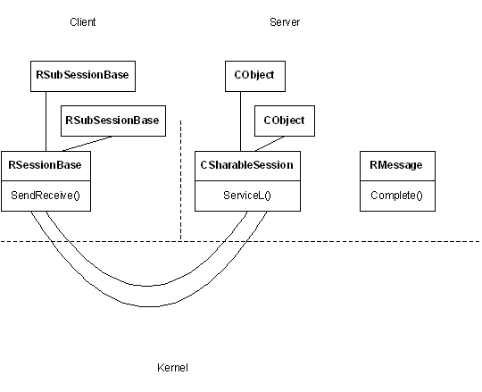

|
| |
Once a client has established a session with a server, it can then establish a number of subsessions with that server. Each subsession represents an independent channel of communication within the current session.
Subsessions are useful if a single client needs to establish many channels of communication with the server. This is because subsessions have a much lower overhead than a full session. The main cost of a subsession is slightly increased programming complexity on the server side.
The main points are:
the client has an RSubSessionBase handle to the
subsession
the server uses a CObject derived class to represent
the subsession.
As a subsession is always referenced by a handle on the client side, the corresponding subsession object on the server side must generate a handle.
For ordinary sessions, the generation of handles is done by the server framework.
For subsessions, server side code must be explicitly written to do
this. The CObject class and its associated container and index
classes provide the behaviour to achieve this.
Each subsession is represented by an instance of a
CObject derived class.
Subsession objects must be held in an object container, an instance
of CObjectCon. This means that the server 's CServer
derived class must construct and maintain a CObjectCon
object.
Object containers are constructed by and held in an object
container index, an instance of a CObjectConIx. This means that
the server 's CServer derived class must construct and maintain a
CObjectConIx object.
A unique handle number for a subsession object is generated when
the subsession object is added to an object index, an instance of a
CObjectIx. This means that the server 's CServer
derived class must construct and maintain a CObjectIx
object.
The handle number is a combination of a unique id assigned to the object's container and a number generated by the object index.

|
Depending on the purpose of the server, more than one object
container (a CObjectCon) and more than one object index (a
CObjectIx) may be used. However, the server must have one
and only one object container index (a CObjectConIx) from
which all object containers are generated.
Copyright ©2002 Symbian Ltd. 6.1-00174 |
|